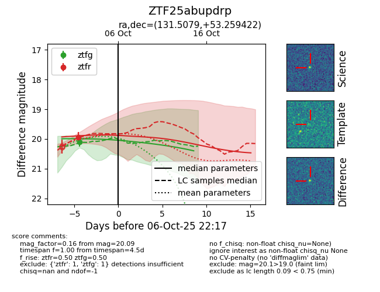
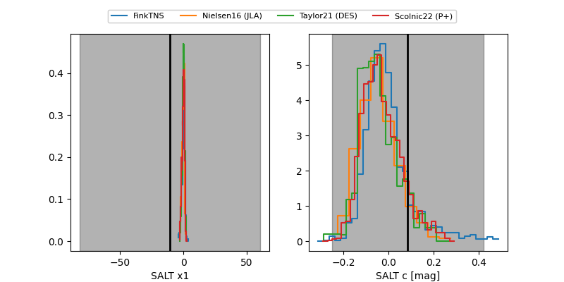

FINK: ZTF25abupdrp
Lasair: ZTF25abupdrp
ALeRCE: ZTF25abupdrp
ZTF25abupdrp (ztf,fink)
equatorial (ra, dec) = (131.5079,+53.25942)
galactic (l, b) = (164.9616,+38.36335)


last ztfg=20.09, ztfr=19.95
1 ztfg, 1 ztfr detections